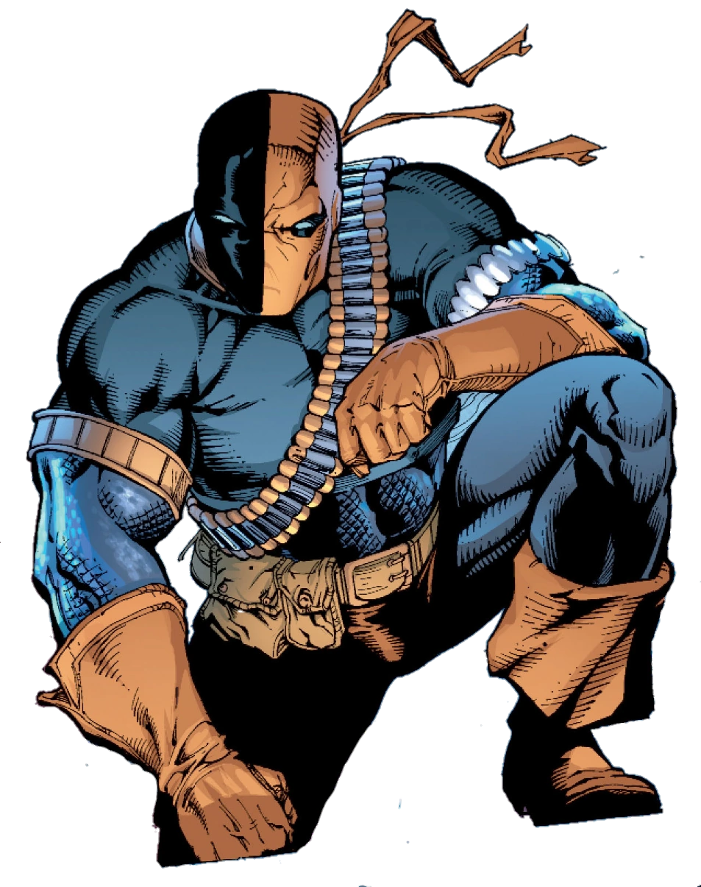

Informações do Exterminador
Voltar
Equipes DC

Criação do Exterminador
O Exterminador, cujo nome verdadeiro é Slade Wilson, é um personagem dos quadrinhos
da DC Comics, conhecido
por sua habilidade tática e habilidades de combate
excepcionais. Ele foi criado por Marv Wolfman e George
Pérez, fazendo sua
primeira aparição em "The New Teen Titans #2" em 1980.
O Personagem Exterminador
Slade Wilson, mais conhecido como Exterminador, é um mercenário altamente
treinado e um dos maiores
estrategistas do universo da DC Comics. Ele serviu como
um soldado de elite e participou de experimentos que
aumentaram sua força,
velocidade e agilidade. Além disso, ele possui um olho biônico que lhe
confere
habilidades aprimoradas de percepção e visão.
O Exterminador é conhecido por sua armadura icônica, que lhe proporciona proteção adicional em combate, e
por sua habilidade de regeneração acelerada, o que o torna difícil de ser derrotado. Ele é um especialista
em todas as formas de combate, desde o uso de armas de fogo até habilidades marciais avançadas.
Embora seja um antagonista formidável, o Exterminador também é um personagem complexo com uma moralidade
ambígua. Ele é motivado por seu desejo de proteger sua família e, às vezes, é mostrado lutando ao lado dos
heróis para alcançar seus objetivos. Sua natureza ambivalente o torna um anti-herói intrigante e cativante.
Quadrinhos Importantes do Exterminador
O Exterminador teve várias histórias importantes nos quadrinhos da DC Comics, destacando suas habilidades e
sua rivalidade com os heróis. Aqui estão alguns dos quadrinhos mais relevantes do personagem:
"The Judas Contract" (1984):
Escrito por Marv Wolfman e ilustrado por George Pérez, esta história apresenta o Exterminador como o
principal antagonista dos Novos Titãs, enquanto ele os persegue em uma trama cheia de reviravoltas e
traições.
"Exterminador: Renascimento" (2016):
Escrito por Christopher Priest, esta série em quadrinhos explora a complexidade do Exterminador e sua busca
pela redenção. A história mergulha em seu passado e apresenta novos desafios que testam sua lealdade e
habilidades.
"Identity Crisis" (2004):
Nesta história escrita por Brad Meltzer e ilustrada por Rags Morales, o Exterminador é recrutado por outros
heróis para investigar um assassinato misterioso. Sua presença adiciona um elemento de intriga e tensão à
trama.
Adaptações em Outras Mídias
O Exterminador também teve várias aparições em outras mídias, incluindo animações, séries de TV e filmes.
Aqui estão algumas das adaptações notáveis do personagem:
Desenho Animado "Teen Titans" (2003-2006):
O Exterminador é um dos principais vilões na série animada "Teen Titans", onde sua rivalidade com os heróis
adolescentes é explorada em várias histórias emocionantes.
Série de TV "Arrow" (2012-2020):
O Exterminador desempenha um papel significativo na série de TV "Arrow", onde é interpretado por Manu
Bennett. Sua presença e história são elementos-chave na trama do programa.
Filme "Esquadrão Suicida" (2016):
O Exterminador faz uma breve aparição no filme "Esquadrão Suicida", interpretado por Joe Manganiello. Sua
participação adiciona uma ameaça iminente aos eventos da história.
Habilidades do Exterminador
O Exterminador possui uma ampla gama de habilidades que o tornam um adversário formidável. Aqui estão
algumas de suas principais habilidades:
Habilidades de Combate:
O Exterminador é um mestre em todas as formas de combate, incluindo artes marciais, táticas militares e uso
de armas de fogo. Sua experiência e treinamento tornam-no um oponente mortal.
Regeneração Acelerada:
Ele possui a capacidade de se curar rapidamente de ferimentos e regenerar tecidos danificados, tornando-o
quase imortal em certos aspectos.
Força e Resistência Aprimoradas:
Sua fisiologia melhorada o torna excepcionalmente forte e resistente, permitindo-lhe realizar proezas
físicas impressionantes.
Habilidades Estratégicas:
O Exterminador é um gênio tático e estrategista, capaz de analisar rapidamente situações de combate e
desenvolver planos eficazes para alcançar seus objetivos.
Conclusão
O Exterminador é um personagem icônico e complexo dos quadrinhos da DC Comics, conhecido por suas
habilidades de combate excepcionais e natureza ambivalente. Sua presença nas páginas dos quadrinhos e em
várias adaptações de mídia demonstra seu apelo duradouro e a fascinação que ele exerce sobre os fãs.
Com sua armadura distintiva, regeneração acelerada e habilidades estratégicas, o Exterminador continua a ser
uma das forças mais temidas e respeitadas do universo da DC. Sua história de redenção e busca por justiça
adiciona profundidade à sua caracterização, tornando-o um personagem intrigante e memorável.